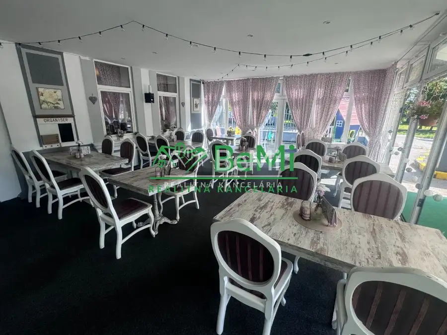
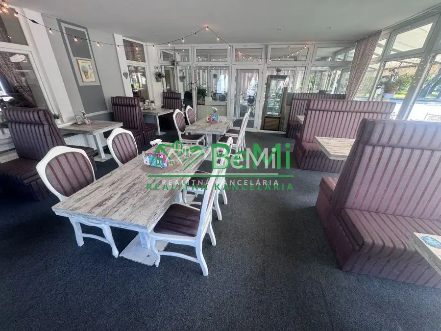
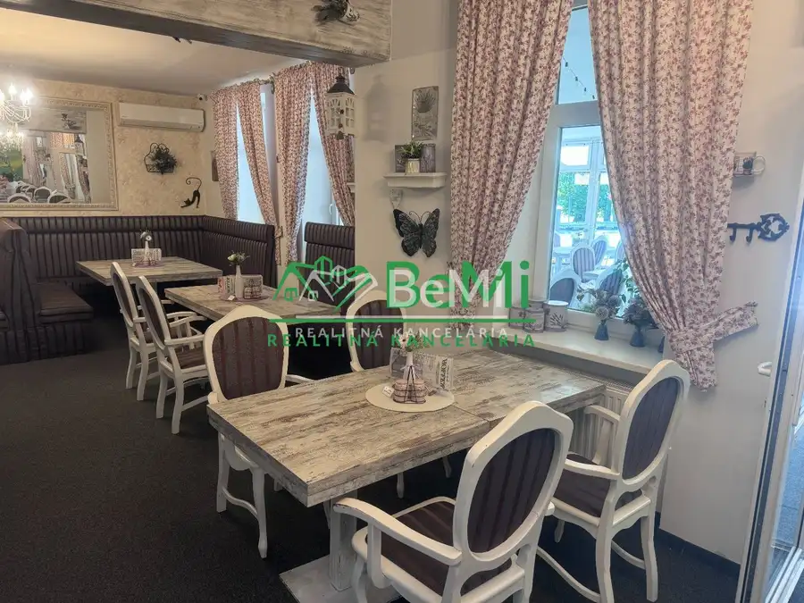
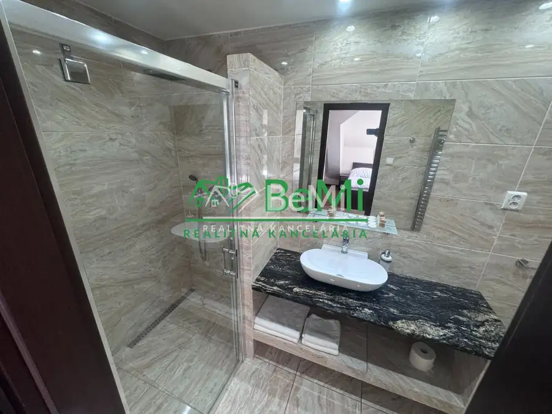
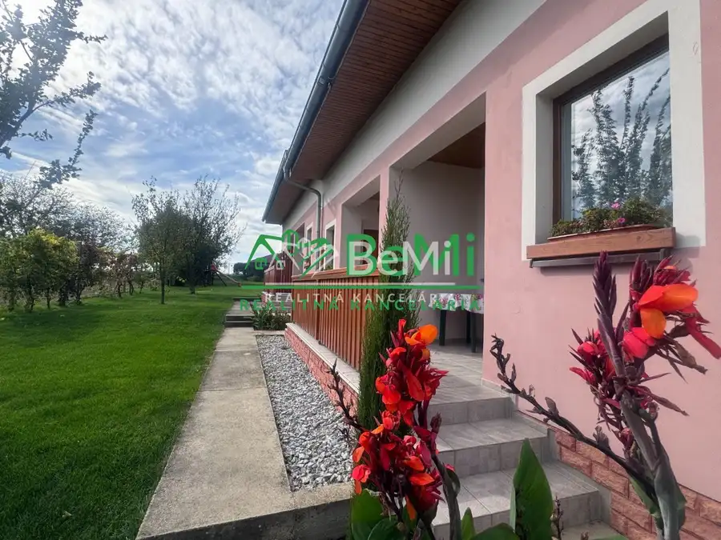
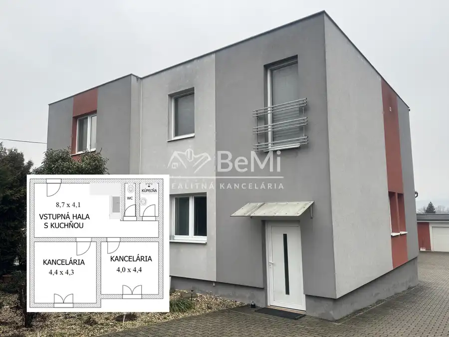
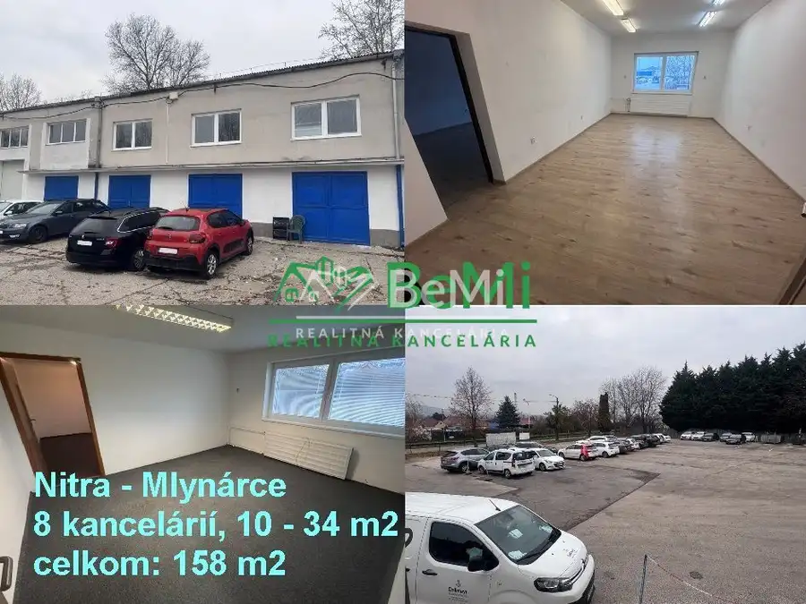

Penzión s reštauráciou – Partizánske (023-18-DABA)
Partizánske




- Plocha490 m²
- StavČiastočná rekonštrukcia
- VlastníctvoOsobné
O nehnuteľnosti
023-18-DABANa predaj Penzión s reštauráciou v Partizánskom – časť Veľké Bielce. Nachádza sa na Hlavnej ulici, pri ceste I/64 spájajúcej Nitru s Prievidzou. Pozemok má celkovú rozlohu 818 m2, hlavná budova penziónu s reštauráciou má úžitkovú plochu cca 400 m2, zasklená terasa má plochu 95 m2. Penzión má 1 vlastné parkovisko a v tesnej blízkosti sú ďalšie 2 parkoviská (celkom 23 parkovacích miest). Priamo pri reštaurácii sa nachádza vonkajší kútik pre deti (110 m2).Zateplená budova penziónu s reštauráciou bola do súčasnej podoby prestavaná v r. 2015.K dispozícii je projektová dokumentácia.Dispozícia:1. podlažie (prízemie – 246 m2): reštauračné priestory pozostávajúce z viacerých prepojených aj samostatných miestností zabezpečujú stravu pre 130 osôb pri 32 stoloch, bar, WC, technické i prevádzkové priestory a vonkajšia terasa (ďalších 20 miest) prístupná cez chodbu z reštaurácie.2. podlažie (poschodie – 149 m2) tvorí ubytovacia časť pozostávajúca zo 6 izieb – 5x dvojlôžková izba + 1x jednolôžková izba (11 postelí + prístelky) a 2 skladov.Nehnuteľnosť je napojená na všetky inžinierske siete a je zabezpečená kamerovým systémom.Cena: 449 000 EURMožnosť financovania aj formou splátok.Vieme Vám pomôcť s vybavením úveru na kúpu tejto nehnuteľnosti.V prípade záujmu ma kontaktujte telefonicky alebo mailom:Daniel Bajčan, tel. č. 0940 775 455, mail: bajcan@realitybemi.skNAŠE CENY SÚ VRÁTANE PROVÍZIE ZA KOMPLETNÝ SERVIS A SÚ SCHVÁLENÉ MAJITEĽOM.
Parametre
- Druh
- Hotel, penzión, ubytovňa
- Dátum zverejnenia
- 03. 09. 2025
- Plocha pozemku
- 818 m²
- Stav nehnuteľnosti
- Čiastočná rekonštrukcia
- Typ
- Predaj
- Vlastníctvo
- Osobné
- Úžitková plocha
- 490 m²
Kde to je


Mohlo by Vás zaujímať

Chalupa, rekreačný domčekNové 185 000 €Vaša oáza pokoja v Podhájskej: 4-izbový rekreačný dom/chalupa s detským ihriskom (037-110-DABA) Podhájska 192 m²
Komerčné priestoryNové Cena na vyžádáníNA PRENÁJOM – kancelárske priestory 70 m2, Nitra – Mlynárce Nitra 70 m²
Komerčné priestoryNové 1 100 €NA PRENÁJOM – kancelárske priestory o celkovej výmere 158 m2, Nitra – Mlynárce Nitra 158 m²